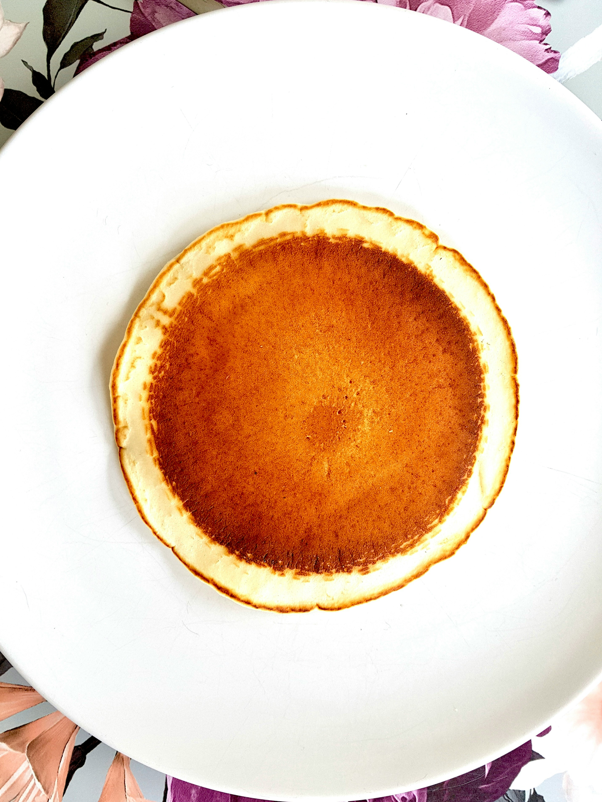

C'est une recette ultra-simple et rapide pour faire des pancakes délicieux et riches en protéines.Voici les ingrédients:
Mixer la pâte : Mettez les œufs, le fromage (ou yaourt) et la farine dans un mixeur (ou un grand bol si vous battez à la main). Mixez bien jusqu'à l'obtention d'une texture bien lisse et homogène.
Cuire les pancakes : Faites chauffer une poêle à feu moyen et graissez-la légèrement avec un peu d'huile ou de beurre (sur un papier essuie-tout). Versez l'équivalent de 3 cuillères à soupe de pâte par pancake.
Retourner : Laissez cuire 1 à 2 minutes jusqu'à ce que les bords commencent à se figer, puis retournez délicatement et laissez dorer de l'autre côté 1 à 2 minutes.

Cette recette viens d'ici